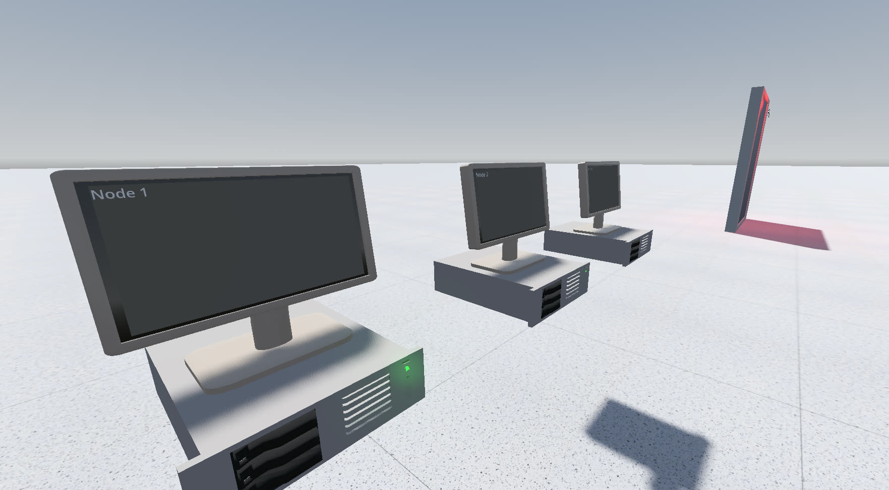

Lamport General Systems
Lamport General Systems is a first-person immersive sim in which the player takes on the role of a lone technician stranded inside a derelict data center. The facility houses five interconnected subnetworks that collectively control an authoritarian surveillance state, each kept alive by hostile Byzantine fault-tolerant protocols. Gameplay centers on manipulating these networks through message interception, code injection, and physical sabotage. As the technician works deeper into the infrastructure, they must decide whether to repair or destroy each system, shaping the fate of the regime and the people it monitors.
Deliverables
Key Challenges
Conceptual Development — Finding the core idea took several weeks of iteration, exploring different interests before arriving at the intersection of distributed systems theory and immersive sim design. The challenge was identifying a subject both technically rich enough to sustain complex gameplay and thematically compelling enough to anchor a narrative.
Adapting BFT for Gameplay — Byzantine fault-tolerant protocols are designed to be resilient and opaque, inherently resistant to player manipulation. I designed a custom BFT protocol tuned for interactive scenarios, balancing technical authenticity with the need for systems the player can meaningfully interfere with.
Systemic Depth vs. Comprehension — The systems needed to be complex enough for emergent gameplay but accessible enough for players to build reliable mental models. This required careful abstraction — depth without impenetrable technical detail.
Communicating the Concept — Pitching a game about Byzantine fault tolerance to audiences unfamiliar with distributed systems required finding the right language, clear frameworks and analogies that conveyed appeal without technical prerequisites.
Emergent World-Building — Rather than front-loading lore, the world-building emerged organically from mechanics and themes. The setting and narrative grew out of questions the gameplay raised, keeping the fiction grounded in the systems.
Looking Forward
- Playtest and refine gameplay loop
- Build environmental storytelling systems (terminal logs, worker artifacts, facility degradation)
- Implement subnetwork cascading choices
- Implement humanoid robot AI and detection mechanics
- Create sound design and adaptive music systems